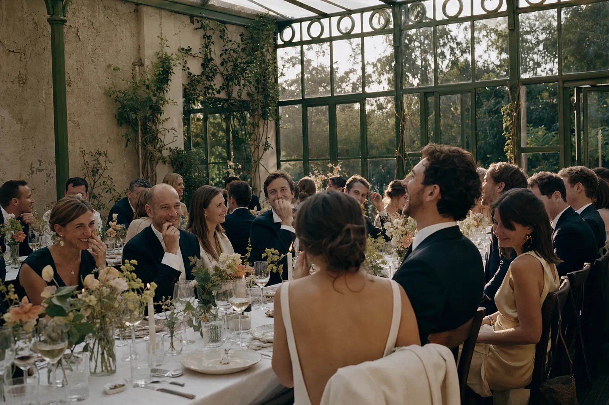
Pałacowa Oranżeria
Wysokie żeliwne okna, surowy piaskowiec, naturalne światło i dzika, bujna roślinność. Dziewiętnastowieczna architektura w dialogu ze swobodną, organiczną formą.
Prywatne atelier planowania ślubów, tworzące przestrzenie dla chwil bez pośpiechu, subtelnej elegancji i autentycznej obecności.
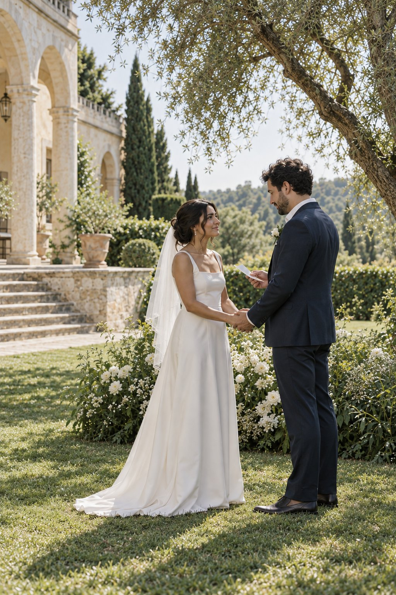
Nie pracujemy w powtarzalnych salach bankietowych. Poszukujemy miejsc z duszą, surową fakturą i czystym światłem, które stają się cichym bohaterem dnia.

Wysokie żeliwne okna, surowy piaskowiec, naturalne światło i dzika, bujna roślinność. Dziewiętnastowieczna architektura w dialogu ze swobodną, organiczną formą.
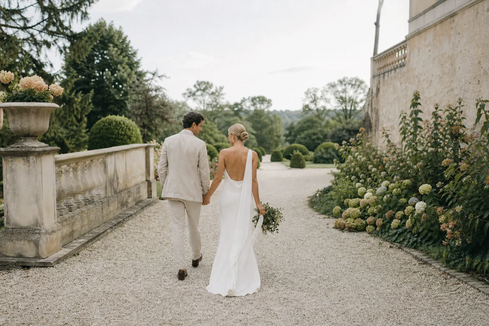
Architektura minimalistyczna, stół bankietowy z surowego lnu, rzeźbiarska ceramika stołowa. Czyste linie geometrii z widokiem na bezkresny spokój jeziora o zmierzchu.
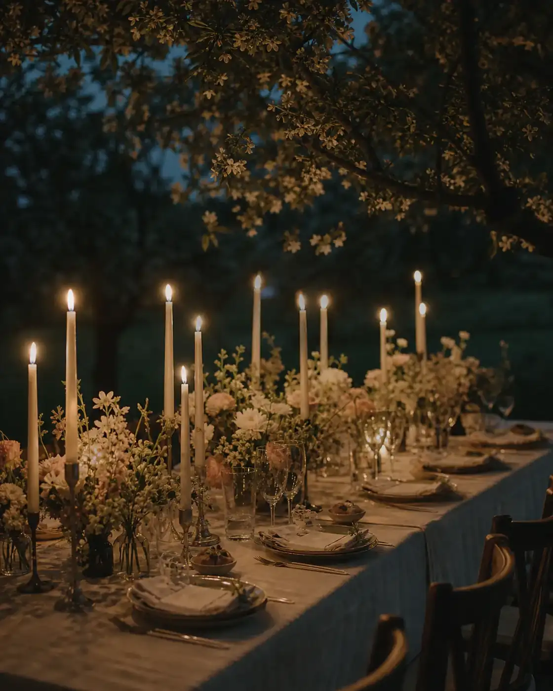
Intymna kolacja dla 40 najbliższych osób, setki świec z naturalnego wosku pszczelego, zapach starego drewna, ziół i chłodny wieczór pod rozgwieżdżonym niebem.
Wybierz moment, aby zobaczyć kadr oraz refleksję koncepcyjną.
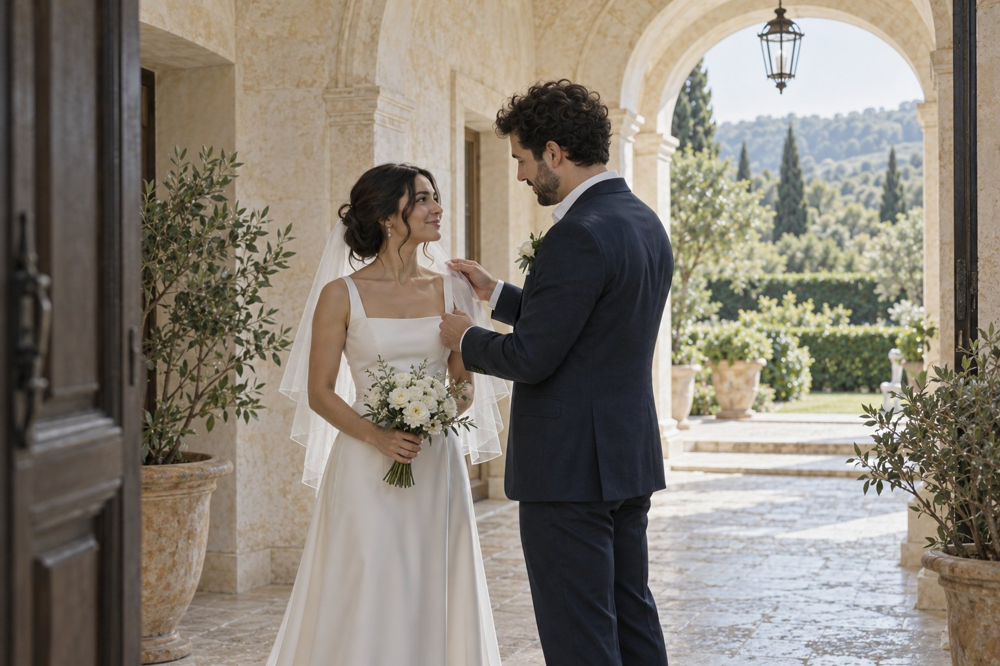
Spokojny początek dnia i czas na przygotowania.
Piękno ślubu nie wynika z nadmiaru dekoracji, lecz z bezbłędnej kompozycji subtelności, których dotykają dłonie Waszych gości.
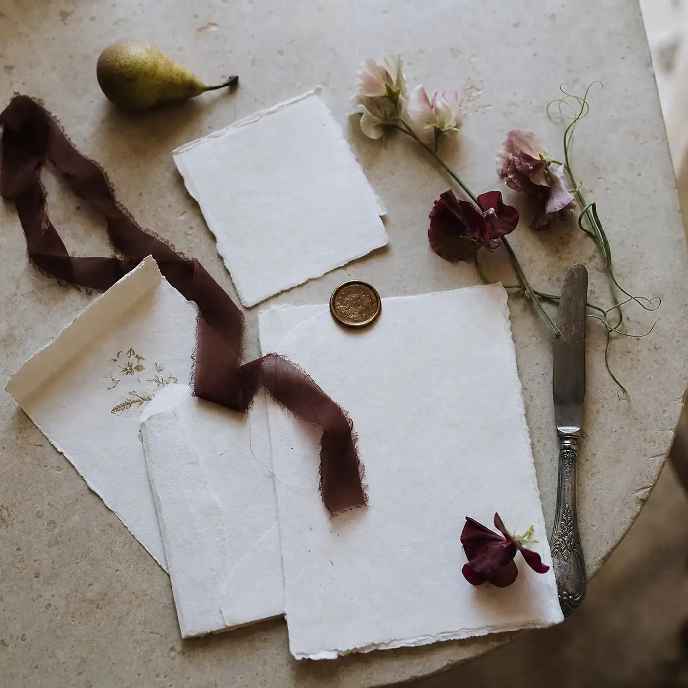
Ręcznie rwane brzegi, naturalne pigmenty mineralne, tusz orzechowy i autorska kaligrafia. Każda papeteria traktowana jak unikalne dzieło sztuki graficznej.
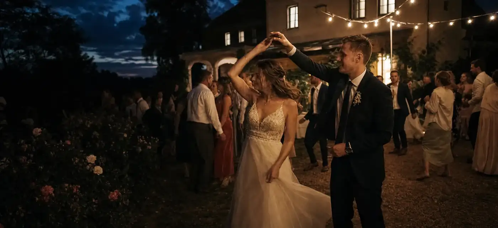
Brak agresywnych reflektorów estradowych. Pracujemy wyłącznie ciepłym wolframem, żywym ogniem setek woskowych świec i architektonicznym półmrokiem.
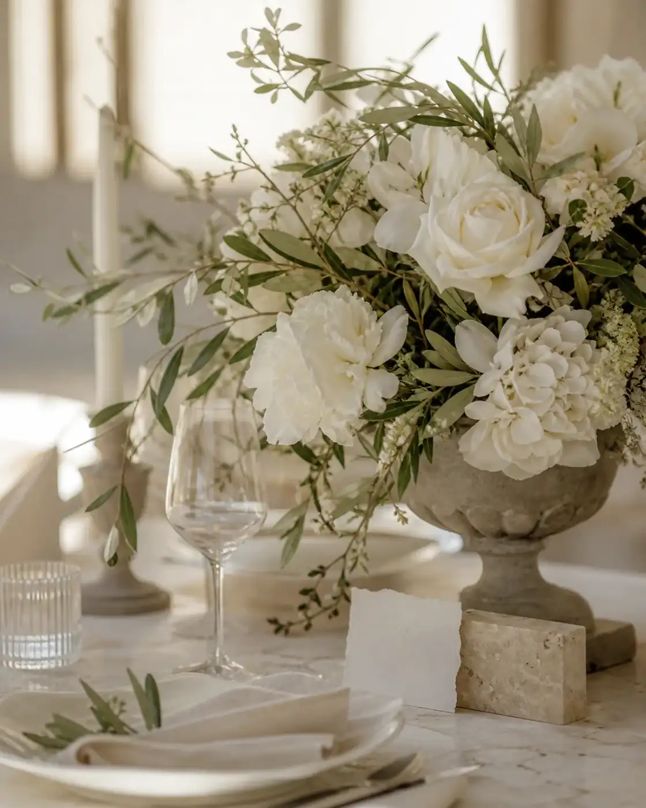
Lokalne kwiaty i gałęzie od zaufanych małych ogrodników, cięte w rytmie pór roku. Całkowity zakaz syntetycznych gąbek florystycznych i zero mikroplastiku.
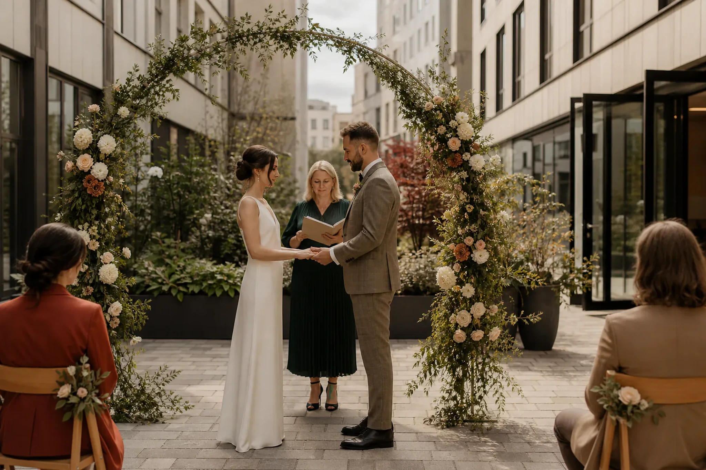
Akustyczne trio jazzowe do popołudniowej rozmowy, a o zmierzchu selekcja płyt winylowych i analogowe, głębokie brzmienie bez estradowego hałasu.
"Prawdziwy luksus to brak pośpiechu i wolność bycia w pełni obecnym z tymi, których kochamy."
Działamy w tle, koordynując każdy detal z niemal niewidoczną precyzją, by para młoda czuła się swobodnie.
Tworzymy harmonogramy zostawiające oddech na spontaniczne rozmowy i chwile, które zapadają w pamięć.
Prowadzimy ściśle ograniczoną liczbę uroczystości, gwarantując osobiste zaangażowanie założycieli atelier.
Planowanie ślubu zamieniamy w uporządkowany, twórczy proces pozbawiony pośpiechu i chaosu decyzyjnego.
Spotkanie w naszym atelier lub rozmowa online przy herbacie. Definiujemy emocjonalny ton, paletę wrażeń sensorycznych, światło i kluczowe momenty, na których Wam zależy.
Dobieramy artystów, którzy czują intymność: fotografowie pracujący na filmie 35mm, rzemieślnicy ceramiki stołowej, szefowie kuchni hołdujący formule farm-to-table.
Sprawdzamy rytm dnia w praktyce. Degustacja menu przy pełnym nakryciu stołu, dobór roczników win i budowa harmonogramu z naturalnymi przerwami na oddech.
Nasz zespół czuwa w cieniu od świtu do wyjścia ostatnich gości. Wy nie zerkacie na zegarek — przeżywacie dzień, będąc w pełni obecnymi z bliskimi.
Każda uroczystość prowadzona przez LUNEA to odrębna narracja filmowa — intymna, niewymuszona i pozbawiona pośpiechu.
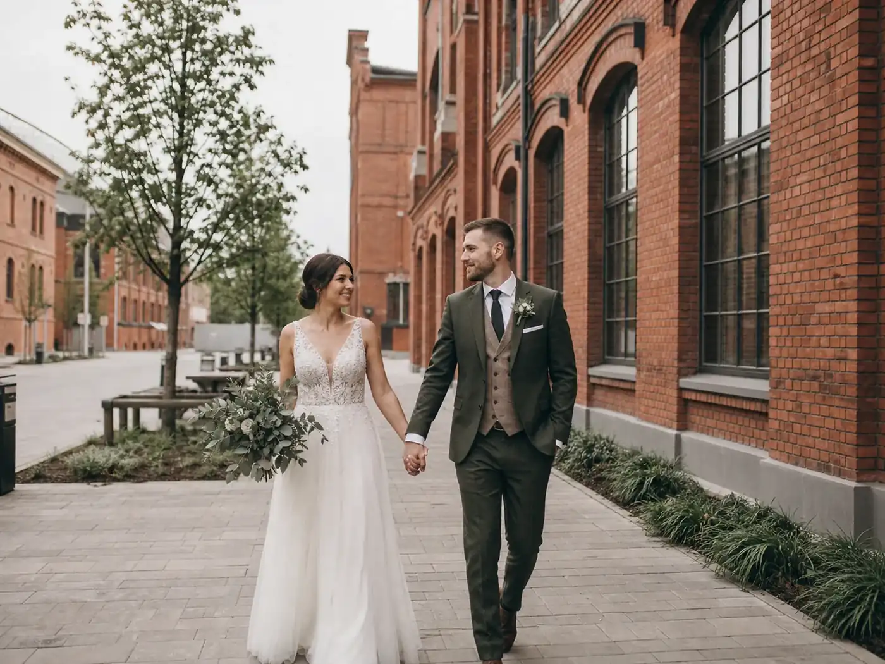
„Chcieliśmy, aby goście zapomnieli o telefonach i poczuli się jak na letniej kolacji u starych przyjaciół. Lunea stworzyła dla nas przestrzeń czystej magii.”
Długi stół z surowego dębu ustawiony wprost na trawie pod koronami wiekowych sosen. Menu oparte na dzikich rybach i leśnych ziołach, wino lane z karafek, a o północy kąpiel w jeziorze przy świetle pochodni.
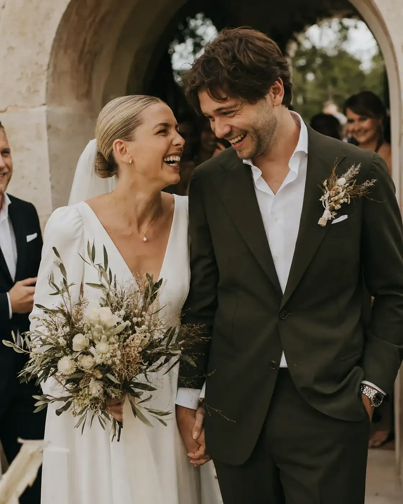
„Nigdy nie sądziliśmy, że w centrum miasta można stworzyć tak intymną, niemal sakralną atmosferę. Niewidzialna reżyseria Lunea pozwoliła nam po prostu być.”
Zabytkowa żeliwna oranżeria wypełniona rzeźbiarskimi trawami i setkami cienkich świec stearynowych. Muzyka grana wyłącznie na pianinie i saksofonie, a kolacja przy świecach trwająca niespiesznie do czwartej rano.
Transparentność jest dla nas fundamentem zaufania. Oto odpowiedzi na najczęstsze pytania par.
Przyjmujemy maksymalnie 8 projektów rocznie (nie więcej niż dwa w jednym miesiącu kalendarzowym). Ta rygorystyczna selekcja gwarantuje, że założyciele atelier osobiście czuwają nad każdym etapem koncepcji i produkcji, poświęcając Waszemu dniu setki godzin uważnej, rzemieślniczej pracy bez delegowania odpowiedzialności na przypadkowych stażystów.
Pracujemy w oparciu o przejrzyste, stałe wynagrodzenie (flat fee), bez jakichkolwiek prowizji czy ukrytych marż od polecanych twórców. Wszelkie rabaty branżowe uzyskane od ogrodników, fotografów czy winiarzy przekazujemy w całości parze. Budżet wydarzenia prowadzimy w formule transparentnej księgi ze stałym monitoringiem wydatków.
Tak, ponad połowa naszych par mieszka na co dzień w Londynie, Zurychu, Berlinie czy Nowym Jorku. Całość procesu koncepcyjnego prowadzimy w elastycznej formule zdalnej (wideokonferencje, cyfrowe moodboardy, próbki papeterii i tkanin wysyłane kurierem), a spotkania na żywo planujemy podczas Waszych zaplanowanych wizyt w Polsce.
Rekomendujemy kontakt z wyprzedzeniem od 6 do 12 miesięcy przed planowaną datą. Pozwala to na spokojny wybór wymarzonej przestrzeni i najlepszych twórców bez konieczności kompromisów. Zdarza nam się jednak realizować kameralne uroczystości z 3-miesięcznym wyprzedzeniem, o ile dysponujemy wolnym terminem w kalendarzu atelier.
Przygotuj krótkie podsumowanie koncepcji dnia.
Wybierz wytyczne Waszego wydarzenia koncepcyjnego.